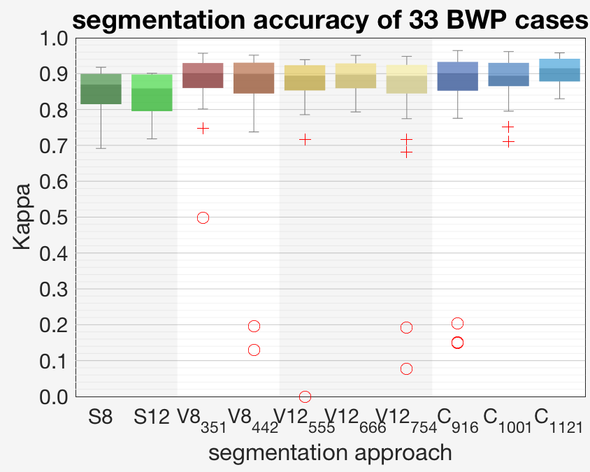
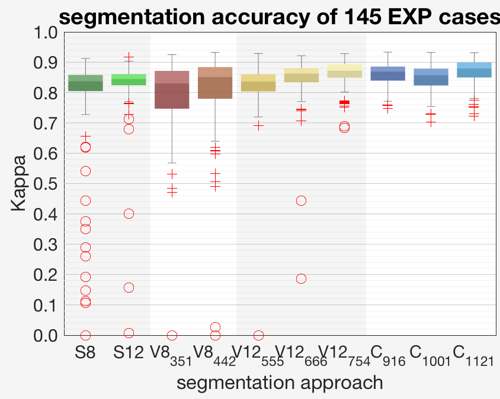
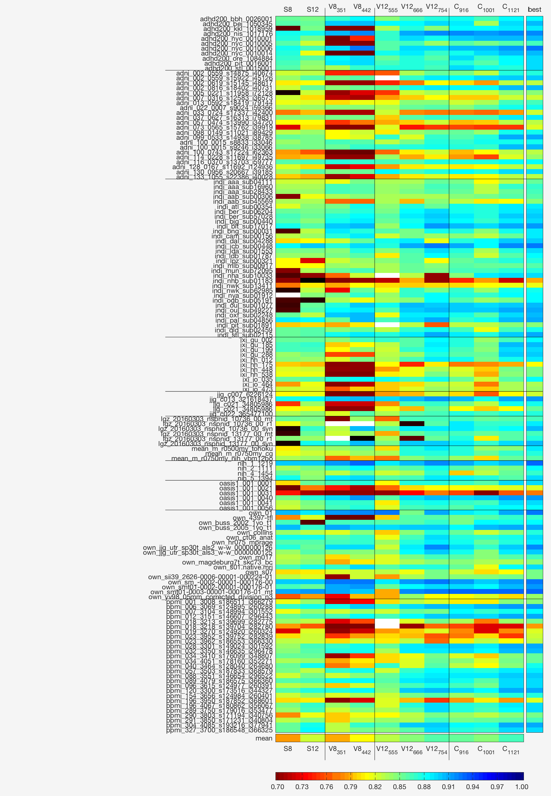
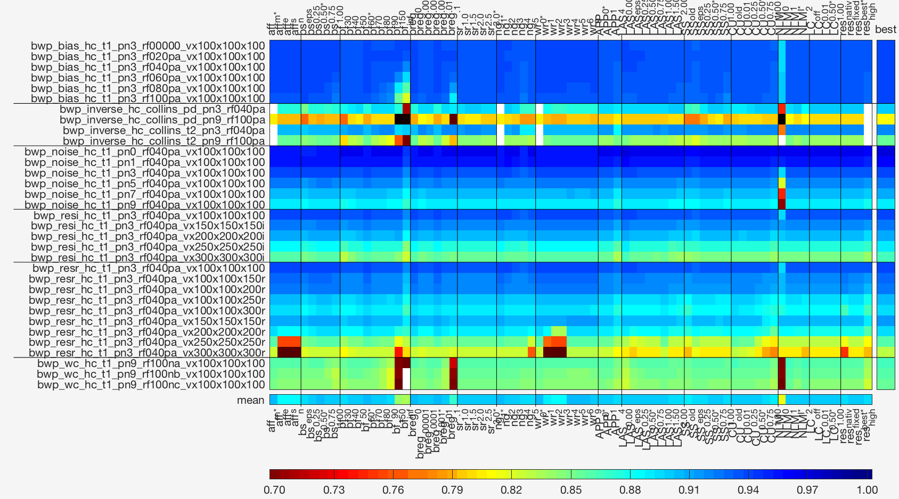
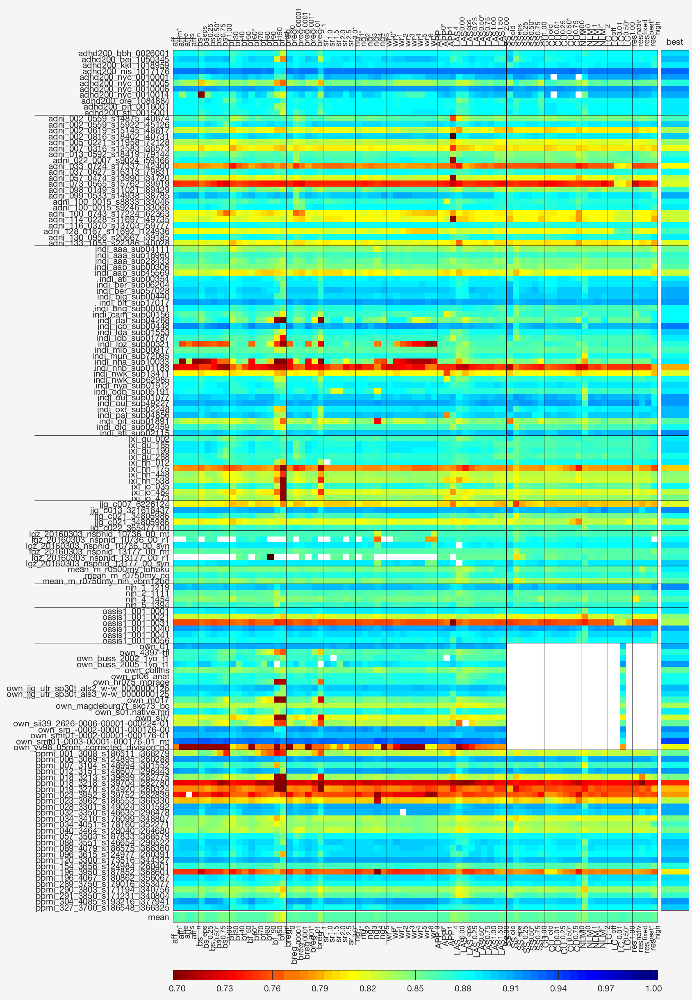

CAT validation
Although, we try to test CAT with different parameter settings, OS systems, and MATLAB versions using synthetic and real data, we are currently not able to test everything for each release. Nevertheless, we are working on this issue to avoid errors.
We currently use 33 synthetic and 125 real datasets for validation of the tissue classification. The synthetic dataset contains of simulated images of the Brain Web Phantom (BWP; Collins et al. 1998) with 6 noise, 6 inhomogeneity, 14 resolution, 3 worst-case examples, and 4 inverse contrasts (PD and T2). The number of BWP images was restricted to the most important cases due to computation time. The real dataset contains of 125 T1 images from different public projects (ADHD200, ADNI, INDI, IXI, NIH, OASIS, PPMI) and private data from other facilities for method tests. The images were acquired on 1.5, 3.0, and 7.0 Tesla scanners manufactured by PHILIPS, GE, and SIEMENS of predominately healthy subjects with age from 1 to 90 years. Experts manually labeled 3 orthogonal slices (one per image dimension) based on noise and inhomogeneity corrected images in native space.
For comparison different releases of SPM, VBM, and CAT were processed. Overall, the improvements between different segmentation methods are more obvious for real but not synthetic data, where many cases that failed (Kappa < 0.6) in early releases now work in current versions. Early versions of VBM12 were more robust but less accurate than VBM8, whereas current versions of CAT allow an accurate and reliable preprocessing. Keep in mind that the real datasets were selected to represent a large variety of typical scanner protocols, but also cover a large variance of human anatomy. Thus, outliers in these tests point to general problems for this type of protocols or anatomy.
 
Overview
Detailed results
BWP test data
SPM8 and SPM12 revealed problems in case of increased noise (e.g. pn9) especially for negative inhomogeneity (e.g. rf100nA). BWP data without noise (pn0) are problematic for SPM, especially SPM12, because of the missing variance. T2 and PD contrasts were not supported in VBM8 and lead to incorrect segmentation in general with flipped WM and CSF class. In VBM12R555 the processing was limited to resolution better than 2.5 mm to avoid low quality results (white block = no result image). Overall the accuracy of VBM12 revisions was lower than in VBM8, but was improved in CAT12 with exception of CAT12R1001. The filename codes the BWP image properties with WC (worst case), pn# for the BWP noise level, rf###[pn][ABC] for the positive (p) or negative (n) BWP inhomogeneity field A, B or C, and vx###x###x###[ri] as original (r) or interpolated (i) voxel resolution of the x, y and z dimension.

Expert test data
SPM12 showed strong improvements compared to SPM8. Although, VBM8 worked very well on the BWP different problems were observed in some special protocols (e.g. extraordinary low or high GM-WM contrast) or untypical anatomy (e.g, heavy atrophy with very large ventricles). To improve the preprocessing, further routines were added to VBM12 that lead to a more stable, but at the beginning also less accurate processing that was improved over time. The problems of CAT12R1001 were also observed for real data and were corrected in the later releases. Because high quality images allows improved labelling of anatomical details processing quality (high kappa) did not correlate with image quality in general. Nevertheless, images with low Kappa in all segmentations partially include light artefacts (e.g. "indi_nhb_sub01183", "ppmi_018_3218...", "ppmi_023...", "ixi_hh_175") or incorrect handled WM hyperintensities (e.g. "adni_033...", "adni_073...", "oasis1_001_0021", "oasis1_001_0031").

Parameter tests
Parameter settings were tested with CAT12 Revision 1109+. The control parameters are designed to allow small adaptations for user specific protocols, e.g. if the default settings are not satisfying, but the changes are also limited to avoid complete fails. Hence, adaptations cannot compensate for severe problems with specific protocols or subjects. The effects depend on the protocol and the subject anatomy and may be characterized by only small changes for most data. Before you change parameters, please check the for severe artefacts in your data and set the origin. If you have challenging data that cannot processed successfully, or observe severe errors/problems please e-mail us.
This part is still under construction and the results are partially incomplete!
SPM parameters
The SPM default user parameters allow the adaptations in cases of failed affine realignment or insufficient inhomogeneity correction.
- The affine registration is controlled by the affreg parameter with setting MNI (affm*; default), eastern (affe), subject (affs), and none (affn).
- The strength of bias correction biasstr controls the biasreg and biasfwhm parameter with 0.01 for slight and 1 for strong corrections (default: 0.5 with biasfwhm = 60 mm and biasreg = 0.001): biasreg = min( 10 , max( 0 , 10-(biasstr*2 + 2) )) biasfwhm = min( inf , max( 30 , 30 + 60*biasstr ))
The SPM expert user parameters include further SPM parameter that are controlled by other parameters or showed only little or unsystematically effects on the CAT segmentation and are therefore only available in the expert GUI:
- The bias field smoothness biasfwhm and bias field regularisation biasreg allows the adaptation of the bias field correction with bf30/br0 for strong correction to bfinf/br0.1 for less corrections and are simultaneously controlled by biasstr parameter defined above and only used if biasstr = 0.
- The sampling resolution samp controls the initial resolution of the Unified Segmentation were higher resolution (e.g. sr1.0) should lead to improved results by higher processing time. However, the much lower default resolution sr3.0 allow similar good results.
- The number of Gaussian per class is controlled by the ngaus parameter with ng1 = [1 1 2 4 3 2], ng2 = [2 2 2 4 3 2], ng3 = [3 3 2 4 3 2], ng4 = [4 4 2 4 3 2], and ng5 = [4 4 2 4 3 2].
- The warpreg parameter controls the degree of warping regularisation in the Unified Segmentation with wr1 = [0 0.0001 0.001 0.01 0.1], wr2 = [0 0.001 0.01 0.1 0.2], wr3 = [0 0.002 0.02 0.2 0.4], wr4 = [0.5 0.4 0.3 0.2 0.1], wr5 = [0.8 0.4 0.2 0.1 0.2], wr6 = [1.0 0.8 0.6 0.4 0.2], and wr9 = [0.0 0.8 0.2 0.8 0.2]).
SPM default user parameters on the BWP (top) and real data (bottom).
CAT parameters
CAT default user parameters for
- the type of affine preprocessing APP with no correction (APP0), light correction (APP1), strong correction (APP4),
- the strength of local adaptive segmentation (LAS) approach LASstr with 0 for no LAS correction (LAS0.00), 0.01 for light (LAS0.01), 0.50 for average (LAS0.50), and 1.00 for strong corrections (LAS1.00),
- the strength of the skull-stripping GCUTstr with 0 for old SPM skull-stripping with cleanup (GC0.00), 0.01 for soft (GC0.01; softer boundary for more tissue), 0.50 for average (GC0.50), and 1.00 for hard skull-stripping (GC1.00; harder boundary with less tissue), and
- The correction of meninges and blood vessels is controlled by the cleanupstr parameter with 0 - no cleanup (CU0.00), eps to 1 - optimized cleanup, 2 - old cleanup (CU2.00) and strength of the optimized cleanup routine with 0.01 for less (CU0.01), 0.50 for average (CU0.50), and 1.00 for strong corrections (CU1.00).
Although APP worked well for some cases, the overall process did not benefit and our test identified too many problems. It is therefore not active by default but can help in some cases.
- REStype & RESval: Resolution setting for internal interpolation with resnative (REStype = 'native'), resbest (default: REStype = 'best'; RESval = [1.0 0.3]), resfixed (REStype = 'fixed'; RESval = [1.0 0.0];), and reshigh (REStype = 'fixed'; RESval = [0.5 0.0];). In particular, data with low (slice) resolution can benefit by interpolation because some operations work on a voxel level. Nevertheless, interpolation can not increase the amount of anatomical details and preprocessing did not benefit by interpolated data in general and in most cases it only required more memory and processing time. Therefore, we recommend to avoid unnecessary interpolation and use it only to avoid strong anisotropies.
- WMHC & WMHCstr: The correction of WM Hyperintensities (WM Lesions) is still in development. It is controlled by the WMHC parameter (0 - no correction, 1 - only for normalization, 2 - add lesions to WM; 3 - create another class p7*) and by the WMHCstr parameter (0 - off; 0.01 - light, 0.50 - average, 1.00 strong corrections). The correction is important for the spatial normalization by Dartel/Shooting. SANLM & NCstr: The noise correction is controlled by two parameters: the filter type and the strength of the filter. By default an improved SANLM filter NLMIis used (SANLM = 1; NCstr = INF), that tries to avoid unnecessary filtering if almost no noise can be found in the data.1 (SANLM = 1; NCstr = 1). Furthermore, a resolution adaptive version ISARNLM (SANLM = 2; NCstr = INF), is available that can help in parallel image artefacts in high resolution data with voxel size below 1 mm (still in development).
CAT default user parameters on the BWP (top) and real data (bottom).
Detailed parameter results
BWP test data

Expert test data

Data references
BWP test data
Table of BWP datasets with image parameters.
| Name | Noise | Inhomogeneity | Native resolution | Interpolation |
|---|---|---|---|---|
| BWP_WC_HC_T1_pn9_rf100nA_vx100x100x100 | 9% | -100% field A | 1.00 x 1.00 x 1.00 | no |
| BWP_WC_HC_T1_pn9_rf100nB_vx100x100x100 | 9% | -100% field B | 1.00 x 1.00 x 1.00 | no |
| BWP_WC_HC_T1_pn9_rf100nC_vx100x100x100 | 9% | -100% field C | 1.00 x 1.00 x 1.00 | no |
| BWP_bias_HC_T1_pn3_rf00000_vx100x100x100 | 3% | 0% | 1.00 x 1.00 x 1.00 | no |
| BWP_bias_HC_T1_pn3_rf020nA_vx100x100x100 | 3% | 20% field A | 1.00 x 1.00 x 1.00 | no |
| BWP_bias_HC_T1_pn3_rf040nA_vx100x100x100 | 3% | 40% field A | 1.00 x 1.00 x 1.00 | no |
| BWP_bias_HC_T1_pn3_rf060nA_vx100x100x100 | 3% | 60% field A | 1.00 x 1.00 x 1.00 | no |
| BWP_bias_HC_T1_pn3_rf080nA_vx100x100x100 | 3% | 80% field A | 1.00 x 1.00 x 1.00 | no |
| BWP_bias_HC_T1_pn3_rf100nA_vx100x100x100 | 3% | 100% field A | 1.00 x 1.00 x 1.00 | no |
| BWP_noise_HC_T1_pn0_rf040_vx100x100x100 | 0% | 40% field A | 1.00 x 1.00 x 1.00 | no |
| BWP_noise_HC_T1_pn1_rf040_vx100x100x100 | 1% | 40% field A | 1.00 x 1.00 x 1.00 | no |
| BWP_noise_HC_T1_pn3_rf040_vx100x100x100 | 3% | 40% field A | 1.00 x 1.00 x 1.00 | no |
| BWP_noise_HC_T1_pn5_rf040_vx100x100x100 | 5% | 40% field A | 1.00 x 1.00 x 1.00 | no |
| BWP_noise_HC_T1_pn7_rf040_vx100x100x100 | 7% | 40% field A | 1.00 x 1.00 x 1.00 | no |
| BWP_noise_HC_T1_pn9_rf040_vx100x100x100 | 9% | 40% field A | 1.00 x 1.00 x 1.00 | no |
| BWP_resi_HC_T1_pn3_rf040_vx100x100x100i | 3% | 40% field A | 1.00 x 1.00 x 1.00 | yes |
| BWP_resi_HC_T1_pn3_rf040_vx150x150x150i | 3% | 40% field A | 1.50 x 1.50 x 1.50 | yes |
| BWP_resi_HC_T1_pn3_rf040_vx200x200x200i | 3% | 40% field A | 2.00 x 2.00 x 2.00 | yes |
| BWP_resi_HC_T1_pn3_rf040_vx250x250x250i | 3% | 40% field A | 2.50 x 2.50 x 2.50 | yes |
| BWP_resi_HC_T1_pn3_rf040_vx300x300x300i | 3% | 40% field A | 3.00 x 3.00 x 3.00 | yes |
| BWP_resr_HC_T1_pn3_rf040_vx100x100x100r | 3% | 40% field A | 1.00 x 1.00 x 1.00 | no |
| BWP_resr_HC_T1_pn3_rf040_vx100x100x150r | 3% | 40% field A | 1.50 x 1.50 x 1.50 | no |
| BWP_resr_HC_T1_pn3_rf040_vx100x100x200r | 3% | 40% field A | 2.00 x 2.00 x 2.00 | no |
| BWP_resr_HC_T1_pn3_rf040_vx100x100x250r | 3% | 40% field A | 2.50 x 2.50 x 2.50 | no |
| BWP_resr_HC_T1_pn3_rf040_vx100x100x300r | 3% | 40% field A | 3.00 x 3.00 x 3.00 | no |
| BWP_resr_HC_T1_pn3_rf040_vx150x150x150r | 3% | 40% field A | 1.50 x 1.50 x 1.50 | no |
| BWP_resr_HC_T1_pn3_rf040_vx200x200x200r | 3% | 40% field A | 2.00 x 2.00 x 2.00 | no |
| BWP_resr_HC_T1_pn3_rf040_vx250x250x250r | 3% | 40% field A | 2.50 x 2.50 x 2.50 | no |
| BWP_resr_HC_T1_pn3_rf040_vx300x300x300r | 3% | 40% field A | 3.00 x 3.00 x 3.00 | no |
Expert test data
Table of used expert datasets with image parameters and sources. This table is still in preparation!
MA = movement artefacts; SA = slice artefacts; WMHs = white matter hyperintensities; EV = enlarged ventricles; SGWC = strong GM-WM contrast
| Name | Project | Site | SID | Resolution | Scanner | public | Comments |
|---|---|---|---|---|---|---|---|
| ADHD200_BEJ_1050345 | ADHD200 | BEJ | 1050345 | 1.00 x 0.50 x 0.50 | yes | ||
| ADHD200_KKI_1018959 | ADHD200 | KKI | 1018959 | 1.00 x 1.00 x 1.00 | yes | SGWC | |
| ADHD200_NIS_1017176 | ADHD200 | NIS | 1017176 | 1.00 x 1.00 x 1.00 | yes | ||
| ADHD200_NYC_0010006 | ADHD200 | NYC | 0010006 | 1.33 x 1.00 x 1.00 | yes | ||
| ADHD200_ORE_1084884 | ADHD200 | ORE | 1084884 | 1.10 x 1.00 x 1.00 | yes | ||
| ADHD200_PIT_0016001 | ADHD200 | PIT | 0016001 | 1.00 x 1.00 x 1.00 | yes | light MA | |
| ADHD200_STL_0015001 | ADHD200 | STL | 0015001 | 1.00 x 1.00 x 1.00 | yes | light MA | |
| ADHD200_BBH_0026001 | ADHD200 | BBH | 0026001 | 1.00 x 1.00 x 1.00 | yes | ||
| ADNI_002_0619_S15145_I48617 | ADNI | 002 | 0619 | 1.02 x 1.02 x 1.20 | yes | light MA | |
| ADNI_002_0816_S18402_I40731 | ADNI | 002 | 0816 | 0.95 x 0.94 x 1.20 | yes | ||
| ADNI_005_0221_S11958_I72128 | ADNI | 005 | 0221 | 0.95 x 0.94 x 1.21 | yes | ||
| ADNI_007_0316_S12583_I36573 | ADNI | 007 | 0316 | 0.94 x 0.94 x 1.20 | yes | light MA | |
| ADNI_013_0592_S18419_I79144 | ADNI | 013 | 0592 | 1.24 x 1.25 x 1.20 | SI 1.5T | yes | |
| ADNI_022_0007_S9024_I59366 | ADNI | 022 | 0007 | 1.25 x 1.26 x 1.20 | SI 1.5T | yes | |
| ADNI_033_0724_S17337_I42400 | ADNI | 033 | 0724 | 0.94 x 0.94 x 1.20 | yes | WMHs | |
| ADNI_037_0627_S16313_I79831 | ADNI | 037 | 0627 | 0.94 x 0.94 x 1.20 | yes | ||
| ADNI_057_0474_S13990_I34720 | ADNI | 057 | 0474 | 1.24 x 1.25 x 1.20 | SI 1.5T | yes | WMHs |
| ADNI_073_0565_S15762_I39919 | ADNI | 073 | 0565 | 1.25 x 1.25 x 1.20 | SI 1.5T | yes | light MA, WMHs |
| ADNI_098_0149_S11021_I89429 | ADNI | 098 | 0149 | 0.94 x 0.92 x 1.19 | yes | ||
| ADNI_100_0743_S17224_I62363 | ADNI | 100 | 0743 | 0.94 x 0.94 x 1.20 | yes | WMHs, EV | |
| ADNI_114_0228_S11697_I49735 | ADNI | 114 | 0228 | 1.26 x 1.24 x 1.20 | SI 1.5T | yes | noisy, EV |
| ADNI_116_0370_S13703_I59777 | ADNI | 116 | 0370 | 0.94 x 0.94 x 1.21 | yes | ||
| ADNI_128_0167_S11692_I124936 | ADNI | 128 | 0167 | 0.94 x 0.94 x 1.20 | yes | ||
| ADNI_130_0956_S20667_I39185 | ADNI | 130 | 0956 | 0.94 x 0.95 x 1.21 | yes | ||
| ADNI_133_1055_S22386_I40028 | ADNI | 133 | 1055 | 0.94 x 0.95 x 1.20 | yes | ||
| ADHD200_NYC_0010005 | ADHD200 | NYC | 0010005 | 1.33 x 1.00 x 1.00 | yes | MA | |
| ADHD200_NYC_0010001 | ADHD200 | NYC | 0010001 | 1.33 x 1.00 x 1.00 | yes | ||
| ADHD200_NYC_0010014 | ADHD200 | NYC | 0010014 | 1.33 x 1.00 x 1.00 | yes | ||
| ADNI_099_S_0533_S14938_I38785 | ADNI | 009 | 0533 | 1.25 x 1.24 x 1.20 | yes | ||
| ADNI_002_0559_S14875_I40674 | ADNI | 002 | 0559 | 0.95 x 0.94 x 1.20 | yes | ||
| ADNI_002_0559_S15922_I45126 | ADNI | 002 | 0559 | 1.00 x 1.00 x 1.20 | yes | ||
| ADNI_100_0015_S9246_I33066 | ADNI | 010 | 0015 | 0.95 x 0.94 x 1.20 | yes | ||
| ADNI_100_0015_S8833_I33046 | ADNI | 010 | 0015 | 1.01 x 1.00 x 1.20 | yes | ||
| INDI_AAa_sub28433 | INDI | AAa | sub28433 | 1.40 x 1.00 x 1.00 | yes | SA | |
| INDI_AAb_sub45569 | INDI | AAb | sub45569 | 1.00 x 1.00 x 1.20 | yes | ||
| INDI_BER_sub57028 | INDI | BER | sub57028 | 1.00 x 1.00 x 1.00 | yes | noisy | |
| INDI_MUN_sub72095 | INDI | MUN | sub72095 | 1.00 x 1.00 x 1.00 | yes | ||
| INDI_NWK_sub62985 | INDI | NWK | sub62985 | 0.86 x 0.86 x 2.00 | yes | ||
| INDI_OUL_sub49227 | INDI | OUL | sub49227 | 0.94 x 0.94 x 1.00 | yes | ||
| IXI_GU_199 | IXI | GU | 199< | 0.94 x 0.94 x 1.20 | yes | ||
| IXI_HH_175 | IXI | HH | 175< | 0.94 x 0.94 x 1.20 | yes | MA, atrophy | |
| NIH_1_1219 | NIH | 1 | 1219< | 1.30 x 1.02 x 1.02 | yes | ||
| NIH_2_1111 | NIH | 2 | 1111< | 1.50 x 0.94 x 0.94 | yes | MA | |
| NIH_4_1454 | NIH | 3 | 1454< | 0.98 x 0.98 x 3.00 | yes | lowres, very young | |
| NIH_5_1394 | NIH | 4 | 1394< | 1.00 x 1.00 x 1.00 | yes | ||
| JJG_C007_6226124_20120302-133831 | JJG | C007 | 6226124 | 1.00 x 1.00 x 1.00 | yes | ||
| JJG_C013_321618437_20130713-120234 | JJG | C013 | 321618437 | 1.00 x 1.00 x 1.00 | yes | ||
| JJG_C021_34805986_20121019-125220 | JJG | C021 | 34805986 | 1.00 x 1.00 x 1.00 | yes | ||
| JJG_C021_34805986_20121019-125220 | JJG | C021 | 34805986 | 1.00 x 1.00 x 1.00 | yes | ||
| JJG_C022_365477100_20100119-104402 | JJG | C022 | 365477100 | 1.00 x 1.00 x 1.00 | yes | ||
| OASIS1_001_0021 | OASIS1 | 001 | 0021 | 1.00 x 1.00 x 1.25 | yes | noisy, atrophy | |
| OASIS1_001_0031 | OASIS1 | 001 | 0031 | 1.00 x 1.00 x 1.25 | yes | noisy, atrophy, severe WMHs | |
| OASIS1_001_0041 | OASIS1 | 001 | 0041 | 1.00 x 1.00 x 1.25 | yes | noisy | |
| OASIS1_001_0056 | OASIS1 | 001 | 0056 | 1.00 x 1.00 x 1.25 | yes | noisy | |
| PPMI_018_3218_S139704_I282780 | PPMI | 018 | 3218 | 0.43 x 0.43 x 2.00 | yes | noisy, anisotropy | |
| PPMI_023_3962_S186553_I366330 | PPMI | 023 | 3962 | 1.20 x 0.94 x 0.94 | yes | extreme GM/WM contrast | |
| PPMI_034_4051_S178160_I352271 | PPMI | 034 | 4051 | 1.50 x 0.94 x 0.94 | yes | ||
| INDI_AAa_sub04111 | INDI | AAa | sub04111 | 1.00 x 1.00 x 1.00 | yes | DF | |
| INDI_AAa_sub16960 | INDI | AAa | sub16960 | 1.00 x 1.00 x 1.00 | yes | DF | |
| INDI_AAb_sub00306 | INDI | AAb | sub00306 | 1.00 x 1.00 x 1.00 | yes | DF | |
| INDI_ATL_sub00354 | INDI | ATL | sub00354 | 1.00 x 1.00 x 1.00 | yes | DF | |
| INDI_BER_sub06204 | INDI | BER | sub06204 | 1.00 x 1.00 x 1.00 | yes | DF | |
| INDI_BJG_sub00440 | INDI | BJG | sub00440 | 1.00 x 1.00 x 1.00 | yes | DF | |
| INDI_BLT_sub17017 | INDI | BLT | sub17017 | 1.00 x 1.00 x 1.00 | yes | DF | |
| INDI_BNG_sub00031 | INDI | BNG | sub00031 | 1.00 x 1.00 x 1.00 | yes | DF | |
| INDI_CAM_sub00156 | INDI | CAM | sub00156 | 1.00 x 1.00 x 1.00 | yes | DF | |
| INDI_DAL_sub04288 | INDI | DAL | sub04288 | 1.00 x 1.00 x 1.00 | yes | SS | |
| INDI_ICB_sub00448 | INDI | ICB | sub00448 | 1.00 x 1.00 x 1.00 | yes | DF | |
| INDI_LDa_sub01553 | INDI | LDa | sub01553 | 1.00 x 1.00 x 1.00 | yes | DF | |
| INDI_LDb_sub01787 | INDI | LDb | sub01787 | 1.00 x 1.00 x 1.00 | yes | DF | |
| INDI_LPZ_sub00321 | INDI | LPZ | sub00321 | 1.00 x 1.00 x 1.00 | yes | SS | |
| INDI_MLb_sub00917 | INDI | MLb | sub00917 | 1.00 x 1.00 x 1.00 | yes | DF | |
| INDI_NHa_sub10033 | INDI | NHa | sub10033 | 1.00 x 1.00 x 1.00 | yes | SS | |
| INDI_NHb_sub01183 | INDI | NHb | sub01183 | 1.00 x 1.00 x 1.00 | yes | SS | |
| INDI_NWK_sub13411 | INDI | NWK | sub13411 | 1.00 x 1.00 x 1.00 | yes | DF | |
| INDI_NYa_sub01912 | INDI | NYa | sub01912 | 1.00 x 1.00 x 1.00 | yes | DF | |
| INDI_OGB_sub05191 | INDI | OGB | sub05191 | 1.00 x 1.00 x 1.00 | yes | SS | |
| INDI_OUL_sub01077 | INDI | OUL | sub01077 | 1.00 x 1.00 x 1.00 | yes | DF,noisy | |
| INDI_OXF_sub02248 | INDI | OXF | sub02248 | 1.00 x 1.00 x 1.00 | yes | DF | |
| INDI_PAL_sub04856 | INDI | PAL | sub04856 | 1.00 x 1.00 x 1.00 | yes | DF | |
| INDI_PIT_sub01891 | INDI | PIT | sub01891 | 1.00 x 1.00 x 1.00 | yes | SS | |
| INDI_QLD_sub02459 | INDI | QLD | sub02459 | 1.00 x 1.00 x 1.00 | yes | DF | |
| INDI_STL_sub02115 | INDI | STL | sub02115 | 1.00 x 1.00 x 1.00 | yes | DF | |
| IXI_GU_002 | IXI | GU | 002 | 1.00 x 1.00 x 1.00 | yes | ||
| IXI_GU_185 | IXI | GU | 185 | 1.00 x 1.00 x 1.00 | yes | ||
| IXI_GU_288 | IXI | GU | 288 | 1.00 x 1.00 x 1.00 | yes | ||
| IXI_HH_012 | IXI | HH | 012 | 1.00 x 1.00 x 1.00 | yes | ||
| IXI_HH_448 | IXI | HH | 448 | 1.00 x 1.00 x 1.00 | yes | ||
| IXI_HH_538 | IXI | HH | 538 | 1.00 x 1.00 x 1.00 | yes | ||
| IXI_IO_035 | IXI | IO | 035 | 1.00 x 1.00 x 1.00 | yes | ||
| IXI_IO_464 | IXI | IO | 464 | 1.00 x 1.00 x 1.00 | yes | ||
| IXI_IO_473 | IXI | IO | 473 | 1.00 x 1.00 x 1.00 | yes | ||
| LGZ_20160303_NSPNID_10736_00_syn | LGZ | NSPNID_10736 | 1.00 x 1.00 x 1.00 | no | |||
| LGZ_20160303_NSPNID_13177_00_syn | LGZ | NSPNID_13177 | 1.00 x 1.00 x 1.00 | no | |||
| OASIS1_001_0001 | OASIS1 | 001 | 0001 | 1.00 x 1.00 x 1.00 | yes | ||
| OASIS1_001_0040 | OASIS1 | 001 | 0040 | 1.00 x 1.00 x 1.00 | yes | ||
| PPMI_001_3008_S186511_I366279 | PPMI | 001 | 3008 | 1.00 x 1.00 x 1.00 | yes | ||
| PPMI_006_3069_S124895_I260288 | PPMI | 006 | 3069 | 1.00 x 1.00 x 1.00 | yes | ||
| PPMI_007_3104_S148994_I301552 | PPMI | 007 | 3104 | 1.00 x 1.00 x 1.00 | yes | ||
| PPMI_012_3151_S146607_I296443 | PPMI | 012 | 3151 | 1.00 x 1.00 x 1.00 | yes | ||
| PPMI_018_3213_S139699_I282775 | PPMI | 018 | 3213 | 1.00 x 1.00 x 1.00 | yes | slice artefacts | |
| PPMI_019_3270_S124920_I260324 | PPMI | 019 | 3270 | 1.00 x 1.00 x 1.00 | yes | ||
| PPMI_023_3952_S139752_I282839 | PPMI | 023 | 3952 | 1.00 x 1.00 x 1.00 | yes | ||
| PPMI_028_3301_S149024_I301592 | PPMI | 028 | 3301 | 1.00 x 1.00 x 1.00 | yes | ||
| PPMI_032_3350_S146635_I296478 | PPMI | 032 | 3350 | 1.00 x 1.00 x 1.00 | yes | ||
| PPMI_034_3410_S176099_I348807 | PPMI | 034 | 3410 | 1.00 x 1.00 x 1.00 | yes | ||
| PPMI_040_3464_S128040_I264680 | PPMI | 040 | 3464 | 1.00 x 1.00 x 1.00 | yes | ||
| PPMI_057_3503_S187833_I368579 | PPMI | 057 | 3503 | 1.00 x 1.00 x 1.00 | yes | ||
| PPMI_088_3551_S146654_I296522 | PPMI | 088 | 3551 | 1.00 x 1.00 x 1.00 | yes | ||
| PPMI_089_4079_S186575_I366360 | PPMI | 089 | 4079 | 1.00 x 1.00 x 1.00 | yes | ||
| PPMI_096_3615_S124977_I260391 | PPMI | 098 | 3615 | 1.00 x 1.00 x 1.00 | yes | ||
| PPMI_120_3300_S173516_I344327 | PPMI | 120 | 3300 | 1.00 x 1.00 x 1.00 | yes | ||
| PPMI_154_3656_S124984_I260401 | PPMI | 154 | 3656 | 1.00 x 1.00 x 1.00 | yes | ||
| PPMI_196_3950_S187852_I368601 | PPMI | 196 | 3950 | 1.00 x 1.00 x 1.00 | yes | ||
| PPMI_196_4067_S180862_I356067 | PPMI | 196 | 4067 | 1.00 x 1.00 x 1.00 | yes | ||
| PPMI_289_3750_S179016_I353477 | PPMI | 289 | 3750 | 1.00 x 1.00 x 1.00 | yes | ||
| PPMI_290_3803_S171194_I340756 | PPMI | 290 | 3803 | 1.00 x 1.00 x 1.00 | yes | ||
| PPMI_291_3850_S171231_I340804 | PPMI | 291 | 3850 | 1.00 x 1.00 x 1.00 | yes | ||
| PPMI_304_4085_S193216_I377941 | PPMI | 304 | 4085 | 1.00 x 1.00 x 1.00 | yes | ||
| PPMI_327_3700_S186548_I366325 | PPMI | 327 | 3700 | 1.00 x 1.00 x 1.00 | yes | ||
| mean_m_R0500my_Tohoku_VBM8bo | ... | 0.50 x 0.50 x 0.50 | PH 3.0T | no | Average of >100 scans | ||
| mean_m_R0750my_CG_VBM8bo | ... | 0.75 x 0.75 x 0.75 | SI 3.0T | no | Average of ~30 scans | ||
| mean_m_R0750my_NIH_VBM12bo | NIH | variousNIH Living Phantom | 0.75 x 0.75 x 0.75 | various | no | Average of ~20 scans | |
| WB01 | WB01 | 0.30 x 0.30 x 0.30 | yes | Winterburn et al. | |||
| WB02 | WB02 | 0.30 x 0.30 x 0.30 | yes | Winterburn et al. | |||
Software Versions
Table of software releases.
| Software | Release | Date | Comment |
|---|---|---|---|
| SPM8 | R4290 | old segment | |
| SPM12 | R6908 | new segment | |
| VBM8 | R351 | 2010-08-09 | |
| VBM8 | R434 | 2014-01-10 | |
| VBM12 | R555 | 2014-01-10 | |
| VBM12 | R666 | 2014-12-11 | |
| VBM12 | R754 | 2015-10-18 | last version before renaming VBM12 to CAT12 |
| CAT12 | R916 | 2016-04-04 | first CAT release |
| CAT12 | R1001 | 2016-09-21 | |
| CAT12 | R1097 | 2017-01-14 | start parameter optimization based on the BWP and real data |
| CAT12 | R1121 | 2017-04-04 | |
References
This part is still in development!
-
Collins et al. 1998
Collins DL, Zijdenbos AP, Kollokian V, Sled JG, Kabani NJ, Holmes CJ, Evans AC. Design and construction of a realistic digital brain phantom. IEEE Transactions on Medical Imaging 1998; 17(3), 463-468.
-
Winterburn et al.
Image references
This part is still in development!
-
ADHD200
-
ADNI
-
INDI
-
NIH
-
OASIS
-
PPMI